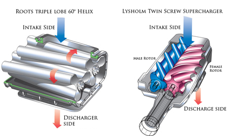
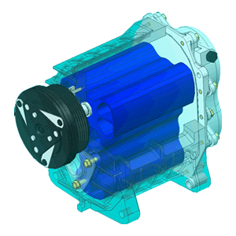

A 'Supercharged' engine
Play the audio segment for an example of a 1st generation Mini Cooper S with a modified supercharger accelerating:
In car terms, superchargers are as old as houses - they were around in the prime of 'Merica's drag racing heyday and are still ocassionally used to boost the power output of a commercially made car engine without massively increasing footprint or dramatically changing engine characteristics. See the image below for an inside view of a supercharger:

A supercharger is the most basic commonly used methods of forced induction. By taking drive from the engine's driveshaft via a pulley such as a belt pulley it drives a mechanism as shown in the above photos. In the instance of the 'twin-screw' example 2 Archimedian screws or 'worm screws' operating in opposing directions force air coming through through the gaps in the screws into the car's cold intake pipe

This forced induction methos often has a very distintive noise when under heavy load (acceleration), known as a forced induction 'whine'.
Superchargers are good because they are a less expensive alternative in forced induction; peripherals such as blow-off valves and Intercoolers are not necessarily required, the original purhase cost is less than what a turbocharger kit might be and dependent on power gain there is limited engine remapping required.